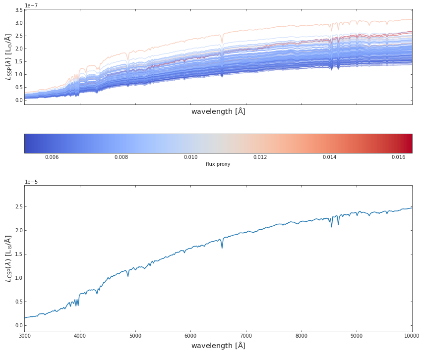
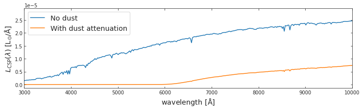
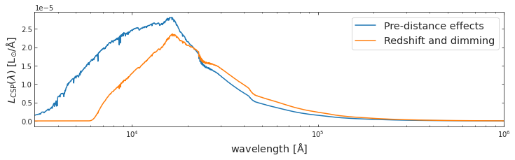
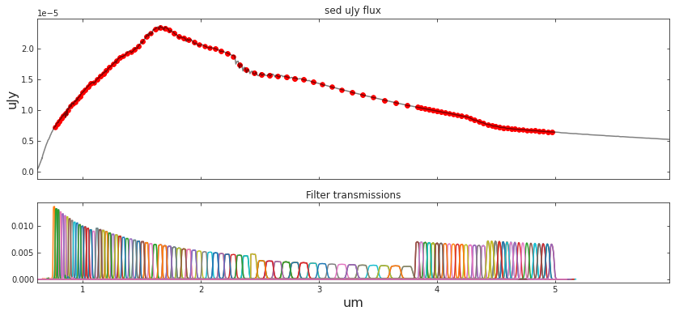
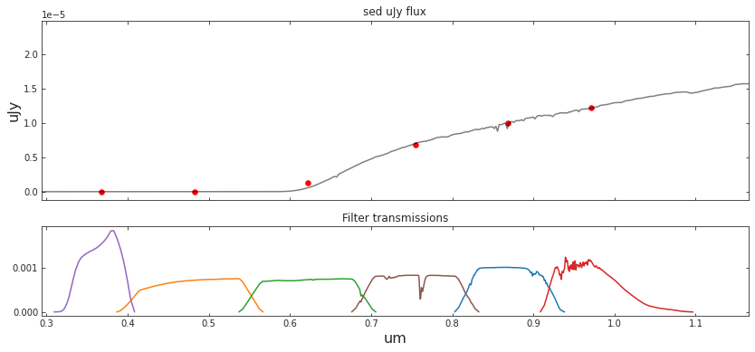
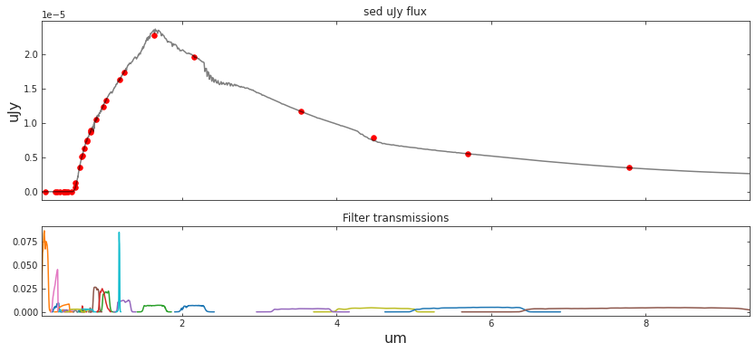

import watercolor
from watercolor.load_sim_stellar_catalog import load_hacc_galaxy_data
from watercolor.calculate_csp import calc_fluxes_for_galaxy
from watercolor.load_sps_library import STELLAR_LIBRARY_DIR
from watercolor.dust_attenuation import spectrum_dusted
from watercolor.cosmic_distance_effects import combine_redshift_and_dimming_effect
from watercolor.filter_convolution import load_survey_pickle, photometry_from_spectra
# from watercolor.filter_convolution import ALL_FILTER_DIRWATERCOLOR
Painting Hydro simulations using Spectral Population Synthesis
Installation
Temporary installation:
pip install git+https://github.com/nesar/watercolor.gitFuture:
pip install watercolorSimple implementation to HACC hydro data
1. First we import the following modules of hydro_colors
2. Then the galaxy-star catalog from HACC is loaded, using a unique galaxy tag, we select a galaxy
galaxy_star_catalog_file = '../watercolor/data/test_hacc_stellar_catalog/Gals_Z0_576.txt'
galaxy_tags, stellar_idx, metal_hydro, mass, age_hydro, x, y, z , vx, vy, vz = watercolor.load_sim_stellar_catalog.load_hacc_galaxy_data(galaxy_star_catalog_file)galaxy_number = 1
unique_galaxy_tag = np.unique(galaxy_tags)[galaxy_number]
print('Number of galaxies: %d'%np.unique(galaxy_tags).shape[0])
logmstar = np.array([np.log10( np.sum(mass[galaxy_tags == unique_galaxy_tag]))])
logZ = np.array([np.sum(metal_hydro[galaxy_tags == unique_galaxy_tag])])Number of galaxies: 103. After selecting a unique galaxy tag, we calculate the SED. This is the rest-frame SED is due to spectral emission alone, and without dust attenuation.
spec_wave_ssp, spec_flux_ssp, spec_csp, flux_proxy, gal_stellar_mass = watercolor.calculate_csp.calc_fluxes_for_galaxy(galaxy_star_catalog_file,
unique_galaxy_tag,
STELLAR_LIBRARY_DIR)Library shape: (22, 94, 1963)
Wavelength shape: (1963,)4. We plot SEDs from both SSPs and CSPs
fig, a = plt.subplots(2,1, figsize=(14, 12), sharex=True, sharey=False)
c_norm = mpl.colors.Normalize(vmin=np.min(flux_proxy), vmax=np.max(flux_proxy))
c_map = mpl.cm.coolwarm
s_map = mpl.cm.ScalarMappable(cmap=c_map, norm=c_norm)
s_map.set_array([])
for idx in range(spec_flux_ssp.shape[0]):
# spec_flux_ssp[idx] = spec_ssp(age_hydro[ssp_id], metal_hydro[ssp_id], mass[ssp_id])
a[0].plot(spec_wave_ssp, spec_flux_ssp[idx],
# color=s_map.to_rgba(np.log10(mass[ssp_id])),
color=s_map.to_rgba(flux_proxy[idx]),
alpha=0.5)
fig.colorbar(s_map, ax = a[0],
orientation = 'horizontal',
# label=r'stellar mass', pad=0.2)
label=r'flux proxy', pad=0.2)
#####################################################################
a[1].plot(spec_wave_ssp, spec_csp)
# a[0].set_ylim(1e-9, 1e-6)
# a[0].set_yscale('log')
# a[1].set_yscale('log')
# a[1].set_xscale('log')
a[1].set_xlim(3e3, 1e4)
a[0].set_xlabel(r'${\rm wavelength\ [\AA]}$', fontsize = 'x-large')
a[1].set_xlabel(r'${\rm wavelength\ [\AA]}$', fontsize = 'x-large')
a[0].set_ylabel(r'$L_{\rm SSP}(\lambda)\ {\rm [L_{\odot}/\AA]}$', fontsize = 'x-large')
a[1].set_ylabel(r'$L_{\rm CSP}(\lambda)\ {\rm [L_{\odot}/\AA]}$', fontsize = 'x-large')
plt.show()
5. CSPs are attenuation due to dust
spec_wave_csp_dusted = spectrum_dusted(spec_csp, spec_wave_ssp, logmstar, logZ, 0.01)0.0 41.012193308819754
0.0 41.012193308819754
Library shape: (22, 94, 1963)
Wavelength shape: (1963,)f, a = plt.subplots(1, 1, figsize=(12, 3))
a.plot(spec_wave_ssp, spec_csp, label='No dust')
a.plot(spec_wave_ssp, spec_wave_csp_dusted, label='With dust attenuation')
a.set_xlim(3e3, 1e4)
a.set_xlabel(r'${\rm wavelength\ [\AA]}$', fontsize = 'x-large')
a.set_ylabel(r'$L_{\rm CSP}(\lambda)\ {\rm [L_{\odot}/\AA]}$', fontsize = 'x-large')
a.legend(fontsize='x-large')<matplotlib.legend.Legend>
6. The resulting dust attenuated spectra undergoes cosmic dimming and redshifting
redsh_wave, redsh_spec = combine_redshift_and_dimming_effect(wave=spec_wave_ssp,
spec=spec_wave_csp_dusted,
galaxy_redshift=0.001)f, a = plt.subplots(1, 1, figsize=(12, 3))
a.plot(spec_wave_ssp, spec_csp, label='Pre-distance effects')
a.plot(redsh_wave, redsh_spec*1e6, label='Redshift and dimming')
# a.set_xlim(3e3, 1e4)
a.set_xlim(3e3, 1e6)
a.set_xscale('log')
# a.set_yscale('log')
a.set_xlabel(r'${\rm wavelength\ [\AA]}$', fontsize = 'x-large')
a.set_ylabel(r'$L_{\rm CSP}(\lambda)\ {\rm [L_{\odot}/\AA]}$', fontsize = 'x-large')
a.legend(fontsize='x-large')<matplotlib.legend.Legend>
7. The final spectrum is convolved with telescope transmission curves to obtain magnitudes
##### Load survey filters
SURVEY_STRING = 'SPHEREx'
central_wavelengths, bandpass_wavs, bandpass_vals, bandpass_names = load_survey_pickle(SURVEY_STRING)
##### Compute bandpasses
# sed_um_wave = spec_wave_ssp/1e4
# sed_mJy_flux = spec_csp*1e3
sed_um_wave = redsh_wave/1e4
sed_mJy_flux = redsh_spec*1e3
flux_survey, appmag_ext_survey, band_fluxes_survey = photometry_from_spectra(central_wavelengths,
sed_um_wave,
sed_mJy_flux,
bandpass_wavs,
bandpass_vals,
bandpass_names,
interp_kind='linear',
plot=True,
clip_bandpass=True)
##### Load survey filters
SURVEY_STRING = 'LSST'
central_wavelengths, bandpass_wavs, bandpass_vals, bandpass_names = load_survey_pickle(SURVEY_STRING)
##### Compute bandpasses
# sed_um_wave = spec_wave_ssp/1e4
# sed_mJy_flux = spec_csp*1e3
sed_um_wave = redsh_wave/1e4
sed_mJy_flux = redsh_spec*1e3
flux_survey, appmag_ext_survey, band_fluxes_survey = photometry_from_spectra(central_wavelengths,
sed_um_wave,
sed_mJy_flux,
bandpass_wavs,
bandpass_vals,
bandpass_names,
interp_kind='linear',
plot=True,
clip_bandpass=True)/lcrc/project/cosmo_ai/nramachandra/Projects/Hydro_paint/watercolor/watercolor/filter_convolution.py:156: RuntimeWarning: divide by zero encountered in log10
appmag_ext = -2.5*np.log10(flux)+23.9
##### Load survey filters
SURVEY_STRING = 'COSMOS'
central_wavelengths, bandpass_wavs, bandpass_vals, bandpass_names = load_survey_pickle(SURVEY_STRING)
##### Compute bandpasses
# sed_um_wave = spec_wave_ssp/1e4
# sed_mJy_flux = spec_csp*1e3
sed_um_wave = redsh_wave/1e4
sed_mJy_flux = redsh_spec*1e3
flux_survey, appmag_ext_survey, band_fluxes_survey = photometry_from_spectra(central_wavelengths,
sed_um_wave,
sed_mJy_flux,
bandpass_wavs,
bandpass_vals,
bandpass_names,
interp_kind='linear',
plot=True,
clip_bandpass=True)